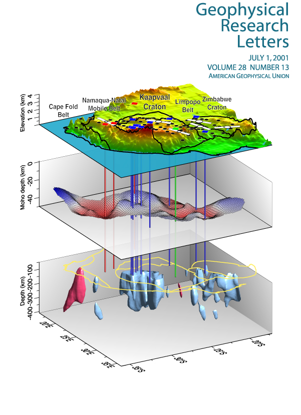
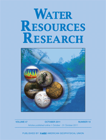
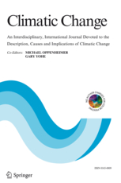
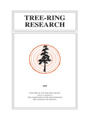
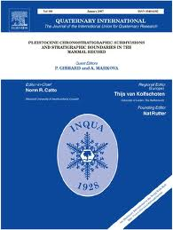

|
|
| Results |
| Several peer-reviewed research articles have been published on results from the Monsoon Project. See below for links to those journal websites and data from the studies. Reprint and digital copies are available upon request (contact: Connie Woodhouse) |
|  |
North American monsoon precipitation reconstructed from tree-ring latewood.
Griffin, D., C.A. Woodhouse, D.M. Meko, D.W. Stahle, H.L. Faulstich, C.L. Carrillo, R. Touchan, C.L. Castro and S.W. Leavitt.
Geophysical Research Letters, 2013.
doi: 10.1002/grl.50184. |
| |
|
|  |
Tree rings reveal multi-season drought variability in the lower Rio Grand basin, USA.
Woodhouse, C.A., D.M. Meko, D. Griffin, and C.L. Castro.
Water Resources Research , 2013
doi: 10.1002/wrcr.20098. |
| |
|
|  |
Reconstructed cool- and warm-season
precipitation over the tribal lands of northeastern Arizona.
Faulstich, H.L., C.A. Woodhouse, and D. Griffin.
Climatic Change, November 2012.
doi: 10.1007/s10584-012-0626-y |
| |
|
|  |
Latewood chronology development for summer-moisture reconstruction in the U.S. Southwest.
Griffin, D., D.M. Meko, R. Touchan, S.W. Leavitt, and C.A. Woodhouse.
Tree-Ring Research 67: 87–101, 2011.
doi: 10.3959/2011-4.1 |
| |
|
|  |
The North American Monsoon in the U.S. Southwest: Potential for investigation with tree-ring carbon isotopes.
Leavitt, S.W., C.A. Woodhouse, C.L., Castro,W.E. Wright,D.M. Meko, R. Touchan, D. Griffin, and B. Ciancarelli.
Quaternary International 235, 101-107, 2011.
http://dx.doi.org/10.1016/j.quaint.2010.05.006.
|
|
|
|